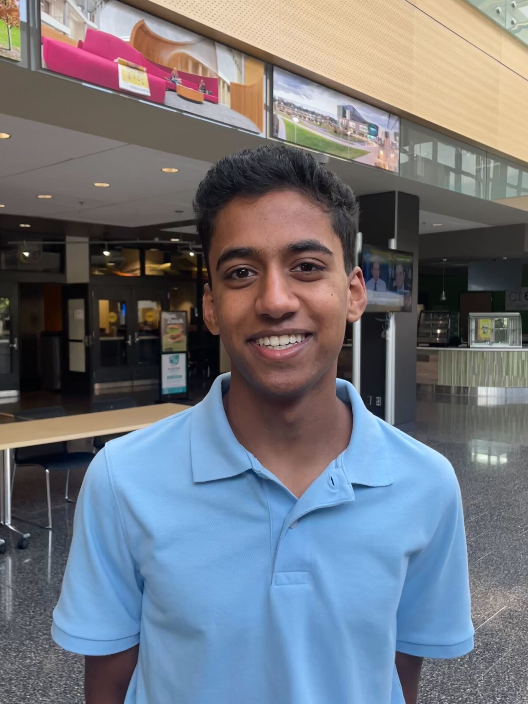
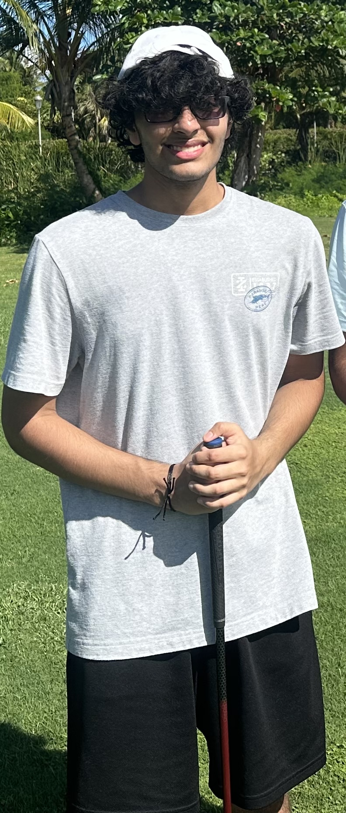
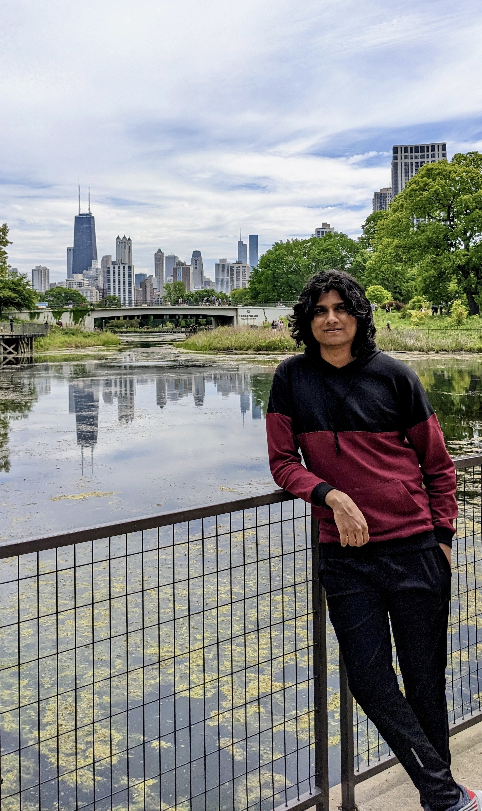

Staff
Preceptor
David Kane
David Kane is the former Preceptor in Statistical Methods and Mathematics in the Department of Government at Harvard University.
Teaching Fellows
Vaangmaya Rebba

Vaangmaya Rebba is a rising senior who is interested in Data Science and Linguistics.
Yuhan Wu

Yuhan Wu is an incoming senior at Newton North High School who is interested in Data Science and Applied Mathematics.
Tejas Mundhe

Tejas Mundhe is an incoming junior at Walnut Hills High School who is interested in Data Science and Robotics.
Alex Kuai

Alex Kuai is a rising sophomore at Newton North High School and has been a TF since freshman year.
Anish Bellamkonda

Anish Bellamkonda is a rising senior at Metea Valley High School.
Srihith Garlapati

Srihith Garlapati is a rising sophomore in Computer Sciences at University of Wisconsin-Madison.
Krish Saluja

Krish Saluja is an incoming senior at Metea Valley High School with an interest in Data Science and Biochemistry.
Program Directors
Ethan Xiao

Ethan Xiao is a rising senior with interest in mathematics and statistics.
Monish Malla

Monish Malla is a junior at Metea Valley High School who is interested in computer science and cybersecurity.
Adi Chaudhary

Adi Chaudhary is a junior at Carmel High School who is passionate about data science and cybersecurity.
Adhithan Manivassakam

Adhithan Manivassakam is a junior at Adlai E. Stevenson High School, with a keen interest in data science and applied mathematics.